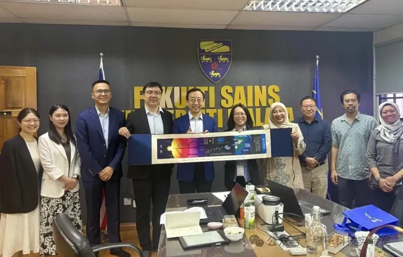
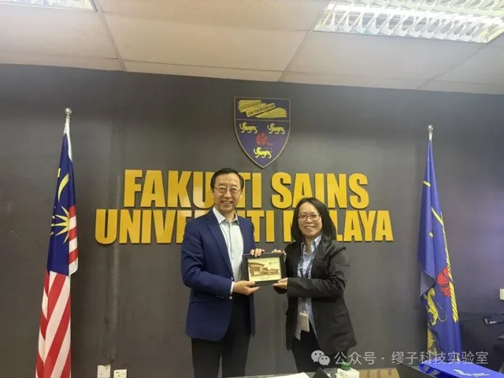
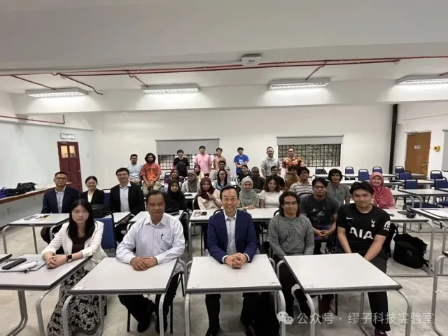
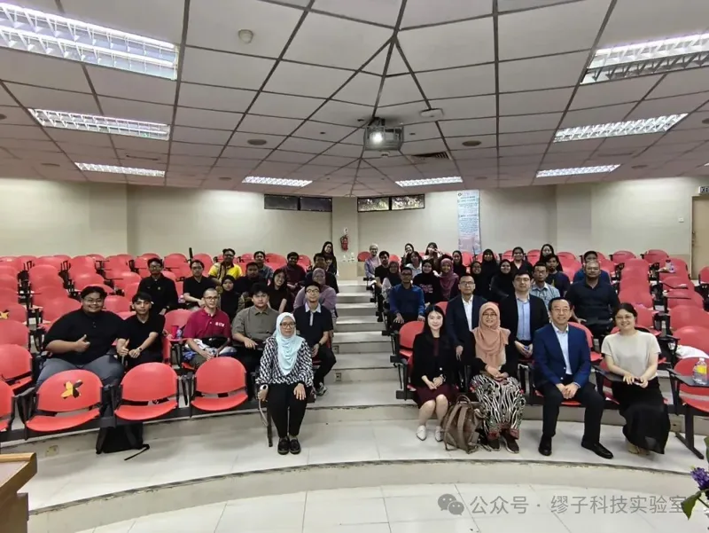
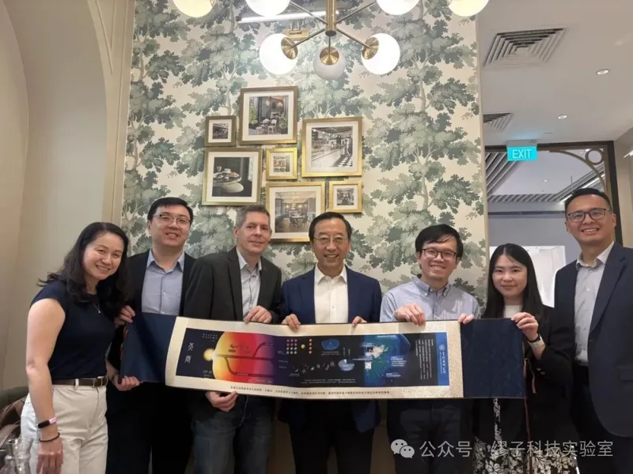

From 17 to 22 June 2026, a Tsung-Dao Lee Institute (TDLI) delegation led by Director Academician Jie Zhang and Party Secretary Zhe Chen visited universities in Malaysia and Singapore to discuss joint PhD training, academic exchange and collaboration in particle and nuclear physics, condensed matter physics, and astronomy and astrophysics. Kim Siang Khaw (Particle and Nuclear Physics Division), Ruidan Zhong (Condensed Matter Physics Division) and Ying Xi (Deputy Director of the Graduate Office) joined the delegation.


Universiti Malaya
On 18 June the delegation was hosted by the Faculty of Science at Universiti Malaya (UM), welcomed by Deputy Dean Prof. Geok Yuan Annie Tan and the Department of Physics. UM is strong in plasma physics, photonics, theoretical physics and high-energy physics, and hosts Malaysia’s National Centre for Particle Physics (NCPP), which coordinates the country’s participation in CMS at CERN and in Belle II and COMET in Japan. The two sides discussed research collaboration, joint student training and exchange programmes, several UM groups expressed interest, and both agreed to map out shared research directions as the basis for concrete plans.
Guided by Prof. Goh Boon Tong, the delegation toured UM’s laboratories for astrophysics, low-dimensional materials, particle physics, and theoretical and computational physics. In the afternoon it visited an undergraduate physics class to introduce TDLI and its PhD programme; many students asked questions and said they hoped to join the SJTU International Summer School in Physics or pursue graduate study at TDLI. The delegation also met Prof. Dr. Tou Teck Yong, President of the Institute of Physics Malaysia.




Universiti Teknologi Malaysia
On 19–20 June the delegation visited the Faculty of Science at Universiti Teknologi Malaysia (UTM), meeting Head of Physics Izyan Hazwani and colleagues. UTM physics has broad experience in applied fields such as nuclear and radiation physics, lasers and photonics, advanced materials and geophysics. The delegation presented TDLI’s PhD programme and recent research, toured laboratories, and the next day met undergraduates to introduce student exchange and the international direct-PhD programme.


Singapore
On 21–22 June the delegation met representatives of the National University of Singapore (NUS) and Nanyang Technological University (NTU). At NUS it was hosted by Yatao Bian, Assistant Professor in the School of Computing, Singapore NRF Fellow and SJTU alumnus, who expressed interest in joint PhD training and research with TDLI at the interface of physics and artificial intelligence. At NTU, Associate Chair Justin Song, Associate Chair and quantum technology centre head Rainer Dumke, and China Affairs Office head Connie Zhang discussed future research projects and joint PhD training.


The visit is part of TDLI’s effort to deepen joint PhD training, broaden international recruitment and train outstanding young researchers. TDLI will now work on matching research directions, cross-promoting PhD programmes and holding online topical seminars, turning these contacts into stable, long-term partnerships.